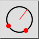
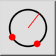
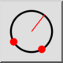
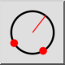

2 Точки и радиус
Лентата с инструменти / Икона:
 

Меню: Начертайте > Кръг > 2 Точки и радиус
Кратък път: C, D
Команди: circleradius | cd
Това е автоматичен превод.
Лентата с инструменти / Икона:
 

Меню: Начертайте > Кръг > 2 Точки и радиус
Кратък път: C, D
Команди: circleradius | cd
Начертава окръжност от две точки на линията на окръжността и радиус.